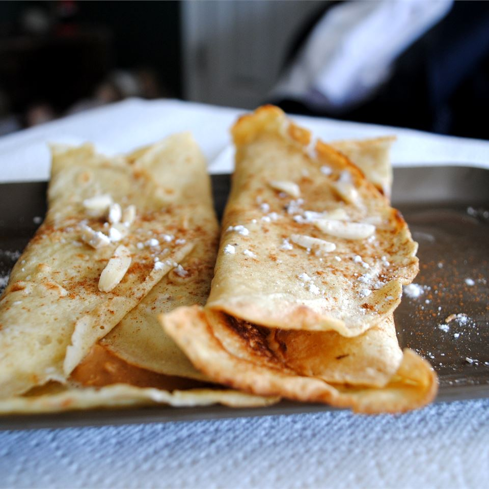

Norwegian Pancakes - Pannekaken

Description
My Norwegian grandmother made this for us as a treat, and it continues to be a favorite my mother makes for my kids. Very easy and versatile. Serve rolled like a crepe with syrup or jam. Can also be a dessert stuffed with a sweetened cream cheese and lingon berry mixture.
Ingredients
- 3 eggs
- 1 ½ cups milk
- 1 cup all-purpose flour
- ¼ teaspoon salt
- 1 teaspoon sugar
Steps
- Combine the eggs and milk in the container of a blender. Add the flour, salt and sugar, and blend until smooth.
- Heat a skillet over medium-high heat, and coat with cooking spray or butter. Scoop about 1/4 cup of batter into the skillet, and tilt the pan to coat the bottom. Cook until the top looks dry, about 30 seconds. Carefully slide a spatula under the pancake and flip. Cook for a few seconds on the other side, just until browned. Remove to a plate, and repeat with remaining batter.